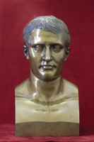

Napoleón Bonaparte
El afamado escultor italiano de principios del siglo XIX, Antonio Canova, aprovechando el ascenso del cónsul Napoleón Bonaparte al trono imperial de Francia, se dedicó a elaborar esculturas del «Gran Corzo», como se le llamaba al afamado general. Usualmente, como en este caso, reproduce la imagen como si fuera la de un emperador romano. El propio Napoleón posó varias veces para el artista. Canova estaba asociado al taller de fundición de los Hermanos Righetti.
El busto que se conserva en las Galerías Bello data del año de 1811 y reproduce con mucha exactitud la fisonomía del emperador de los franceses. La obra está firmada: «Canova sculpist».